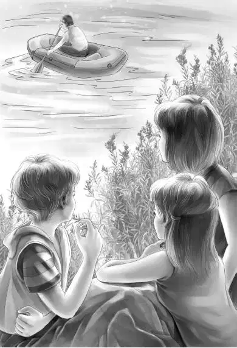

Henry backed the car into the woods a little way. Nobody could see it from the road. The Aldens all got out and took out every car rug that they could find for bedclothes. It was so warm that they didn’t really need any covers.
Henry and Benny let down the seats that made beds for four people. By nine o’clock all was ready. Benny climbed up on top of the car.
“I won’t fall down，” he called. “There’s a railing all around the edge. I’m going to put this blanket under me instead of over me.” He folded the car blanket and lay down. “A very soft bed，” he said.
“I should think Freddy would be along soon—if he’s coming，” said Jessie. “I wonder what he will do.”
In about an hour they heard a car coming. It did not make much noise， but everyone was awake. Benny sat up and looked through the trees. “Yes， it’s a car，” he whispered.
But the car stopped. Everyone was watching it now. Mr. Freddy must have seen that the tide was in， because he quietly turned his car around and went back.
“Now what？” Benny whispered down. “I don’t think he is going to give up like that. He would just love to be on the island when we are away. He knows we are watching him， I bet.”
They all lay down again. But nobody went to sleep. It was not too long before they heard another very soft sound. It sounded like water， and it was ahead of them. They all looked hard through the darkness.
“He’s got a boat！” whispered Henry. They all watched. Then they all saw it. It was a rowboat with Mr. Willet’s head showing against the dark sky.
“Come down now， Benny，” whispered Grandfather. “We’ll get a boat， too！”
“Oh， can we really？” whispered Benny. “Where can we get a boat？”
“Where Mr. Willet got his， I think，” said Grandfather.
They all sat up in the car， and Henry drove back over the road very carefully.
“There’s a light！” said Violet. “It’s in a fisherman’s hut.”
Henry stopped the car in front of the house.

“Somebody is awake，” said Jessie. “And do I see the end of that red car sticking out behind the house？”
“You do，” said Mr. Alden. “I do， anyway. I think this is the place where Freddy got his boat. You do the talking， Henry.”
Henry went to the door and knocked. At once a fisherman came to the door. He wore an old coat.
“I’m sorry to come so late，” began Henry， “but we need a boat. It’s high tide， and we’re stuck.”
“Yep， I know that，” said the man. “Seems as if everybody is stuck tonight on the wrong side.”
“Can we rent a boat from you？” asked Henry.
“Sure！I’ve got three. I just rented two.”
“Two！” said Henry in surprise.
“Yep， two. One man came， and then another man came. You can have the last one.”
“Where is it？” asked Henry.
“It’s tied down near the road， when there is a road. You’ll see it on the bank on the left， tied to a post. Can’t miss it.”
“How much will it be？” asked Henry. He couldn’t help wondering about two men. He had been thinking only of Freddy Willet.
“A dollar，” said the man. “Be sure and tie her up on the island side. My boys can row ’em back tomorrow. It ain’t far.”
Henry quickly gave the man a dollar and thanked him. Then he went back to the family. He said， “Do you suppose five of us can get into one boat？”
“We’ll see，” said Grandfather. “I think so.”
Benny had heard about the two men. He could hardly wait to speak. “Who do you suppose that other man was？A mystery， for sure.”
Mr. Alden was thinking， too. “I wonder，” he said.
Henry drove back to the water. Sure enough， a boat was tied up on the bank.
“Good！It’s a big one，” said Grandfather. “I wonder why we didn’t see it. Back the car off the road again， Henry. I guess this night’s sleep is over.”
Everybody got out of the car and went carefully down to the boat. When Henry came， they all pushed the boat into the water. Henry helped Violet and Jessie into the front of the boat， and Benny stepped into the other end. When Grandfather was sitting down on the middle seat， Henry pushed off. He and his grandfather began to row.
“We’ll tie up just below the schoolhouse，” said Henry. “I suppose we will see the other two boats there.”
It was not very far to the island， but it was dark， and the tide was very high. They could see a little through the darkness. But there were no boats to be seen！
“What do you know！” said Benny. “Where would Freddy go？Do you think he has a partner， Grandfather？”
“Well，” said Mr. Alden， “I don’t know. If the man is a partner of Willet’s， why would he come by himself？”
“That’s so，” Jessie said.
Benny added， “But I’m almost sure the first man must have crossed over to the island before we came. We were watching and listening all the time.”
Henry ran the boat up on the beach. He tied it to a tree.
Suddenly Violet looked around and asked， “Where do you suppose Freddy has gone？” She shivered a little.
“Not to the hotel，” Jessie said. “And I don’t think he would stay with any of the island people.”
“I wonder，” said Henry. “I just wonder—”
“I know，” said Benny. “The schoolhouse！”
Benny would have run to peek in the windows， but Grandfather said， “How do you know that Freddy isn’t going back to the other side after getting something？The best thing we can do now is to get some sleep.”
“And there’s school tomorrow，” said Violet.